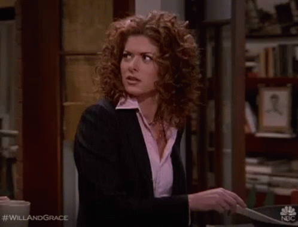

Grace Adler
Grace is an interior designer who is Will's best friend. She is straight and often serves as the emotional counterpoint to Will's practicality. Grace is creative, artistic, and passionate, but she can also be insecure and impulsive. She has a complicated relationship with men, and throughout the series, she struggles to find a lasting relationship.